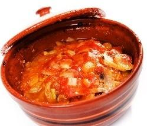
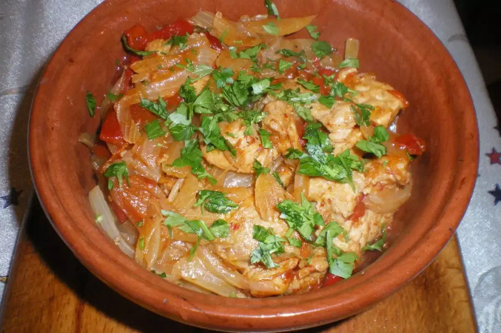
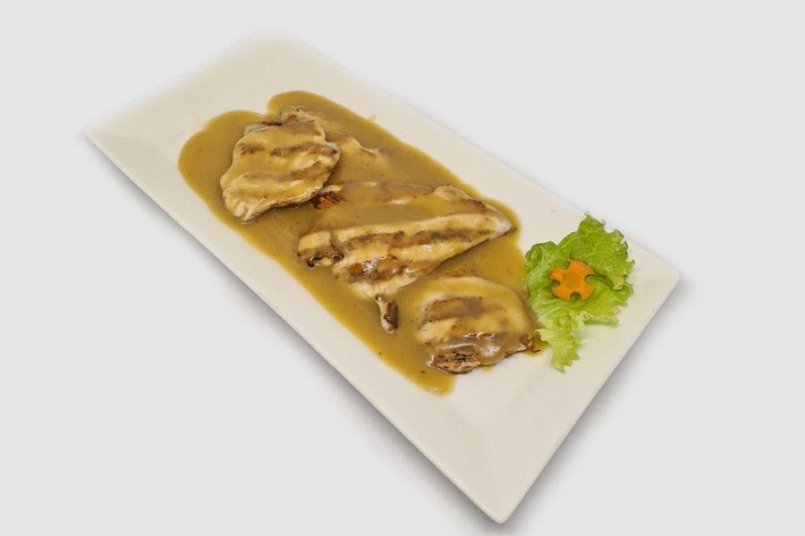
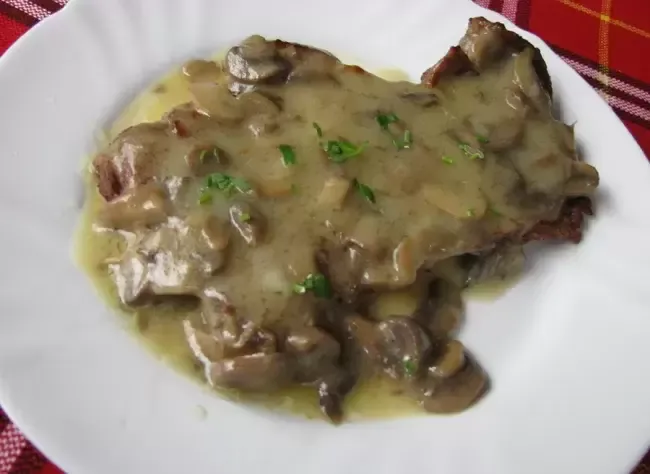
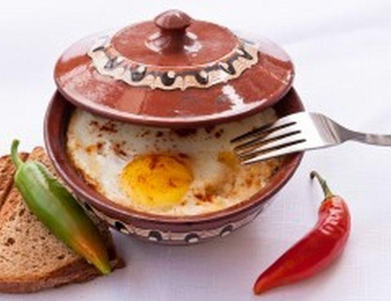
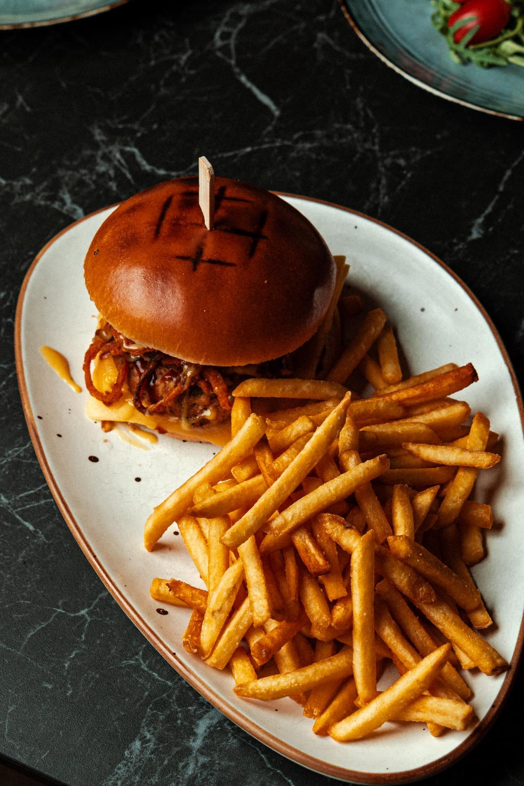
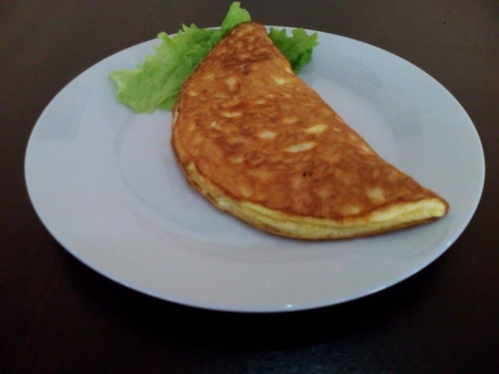
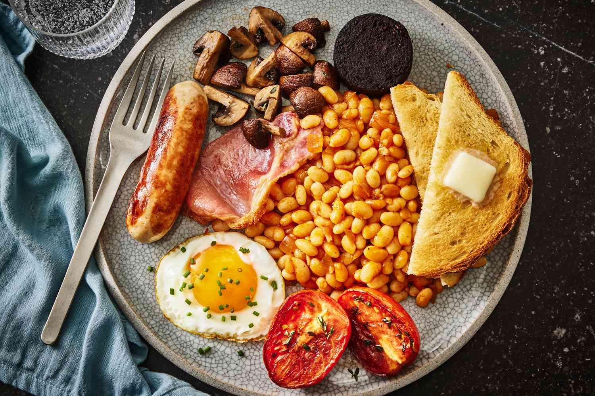

Tavuk Kavarma

Tavuk Kavarma
Soğan, biber ve baharatlarla güveçte tavuk eti.
0.400 кг / 13.80 лв

Domuz Kavurma
Sebzeli ve aromatik domuz eti kavurması.
0.400 кг / 13.80 лв

Fasulyeli tavuk fileto
Izgara tavuk, geleneksel beyaz fasulye ile.
0.350 кг / 15.90 лв

Fasulyeli domuz eti
Bulgarka usulü fasulye ile pişirilmiş domuz eti.
0.350 кг / 15.90 лв

Şopski peyniri
Domates, yumurta ve baharatlarla fırınlanmış beyaz peynir.
0.350 кг / 9.90 лв
Tavuk burger ve patates
Lezzetli tavuk burger, çıtır patatesle servis edilir.
0.500 кг / 14.00 лв

Domuz burger ve patates
Izgara domuz burger ve patates kızartması.
0.500 кг / 14.00 лв
Sığır burger ve patates
Klasik sığır eti burger, patates ile.
0.500 кг / 14.00 лв
Vejetaryen burger ve patates
Sebzeli burger, patates garnitürü ile.
0.500 кг / 13.80 лв

Doğal omlet
Taze yumurtalardan kabarık omlet.
0.300 кг / 7.00 лв
Добавки (по избор)
+ Кашкавал — 0.050 кг / 1.20 лв
+ Сирене — 0.050 кг / 1.20 лв
+ Бекон — 0.050 кг / 2.00 лв
+ Шунка — 0.050 кг / 2.00 лв
+ Гъби — 0.050 кг / 1.20 лв
+ Микс зеленчуци — 0.050 кг / 1.20 лв
+ Луканка — 0.050 кг / 2.00 лв
+ Яйце — 1 бр / 1.60 лв
Добавки (по избор):
+ Кашкавал — 0.050 кг / 1.20 лв
+ Сирене — 0.050 кг / 1.20 лв
+ Бекон — 0.050 кг / 2.00 лв
+ Шунка — 0.050 кг / 2.00 лв
+ Гъби — 0.050 кг / 1.20 лв
+ Микс зеленчуци — 0.050 кг / 1.20 лв
+ Луканка — 0.050 кг / 2.00 лв
+ Яйце — 1 бр / 1.60 лв

İngiliz kahvaltısı
Sosis, yumurta, peynir, domates, zeytin, tost.
0.600 гр / 19.90 лв